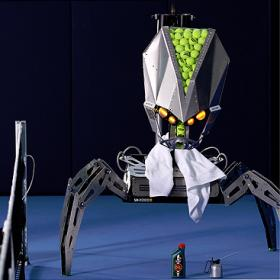
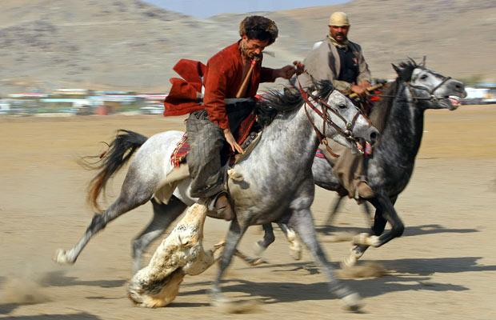
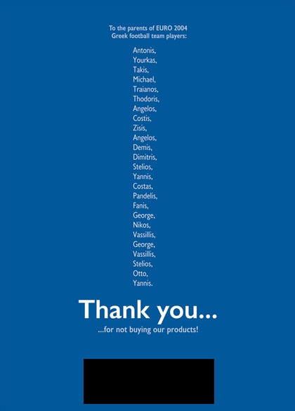
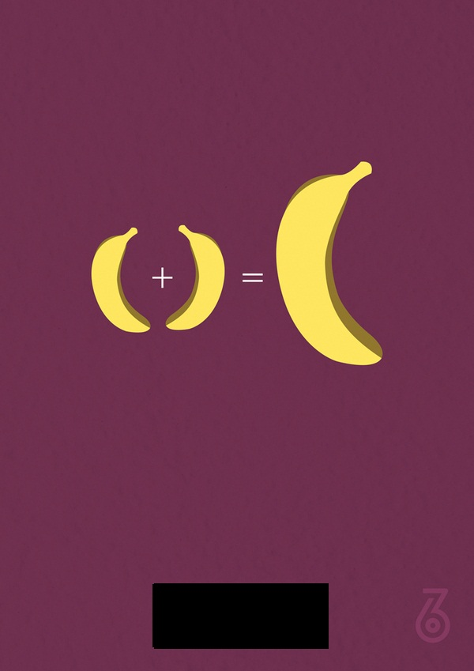

Sports I
Apr 24, 2015 Posted by: Manoj
1.1. Put funda.Identify the missing entrant.
a. Martina Hingis
b. Mirka Vavrinec
3. ??
2.In 2011, the company X featured a campaign ‘Champions Drink Responsibly’ where the Roboserv 3000(image) controlled by selected fans get to virtually compete against a champion.Name the company and the champion. 
3.X is a sporting club founded in April 1907, X was named in 2000 by the Confederation of African Football as the "African Club of the Century".As of 2014, the club has won 130 official trophies (106 domestic, 4 Arabian and 20 international), more than any other senior team in the world. On winning the 2014 CAF Super Cup, X set a record in terms of international titles won.Name X.
4. Although one would think the name is an an oxymoron, this sport did feature in the 1984, 1988, and 1992 Olympics and was won by Tracie Ruiz-Conforto, Carolyn Waldo, and Kristen Babb-Sprague respectively. Which sport?
5. The club X is being sued by DC Comics for allegedly infringing on one of their copyright logos.
The Club plays in La Liga.X?
6. ______ or kokpar is the Central Asian sport in which horse-mounted players attempt to drag a goat or calf carcass toward a goal. It is the national sport of Afghanistan, although it was banned under the Taliban regime. Pic on Next Slide.

7. AD by which company

Answers:
1. Roger Federer's Mixed Doubles Partners, Sania Mirza
2. Rafael Nadal and Bacardi
3. Al Ahly FC, Egypt
4. Solo Synchronized Swimming
5. Valencia FC
6. Buzkashi
7. Durex
Movies I
Apr 28,2015 Posted by: Manoj
1.The Portable Automated Somnacin IntraVenous Device (PASIV) has the following configuration.
1. A central button called the Infusion Trigger that can activate all IV lines at once.
2. Configurable control settings for the accurate monitoring and adjustment of Somnacin levels.
3. 12 foot (4 meter) IV lines for versatile in the field set-up.
4. LED display with atomized timer for monitoring precise flow rates.
5. Synchronization monitoring chip for flow check monitoring and automated adjustment to optimize output flow.
6. Lithium iodide batteries with life of 200 hours.
7. Additional vial storage for multiple doses in the field.
8. Case lock for prevention of system tampering.
9. Memory backup for retention of infusion output data.
10. Easy access to fuses and batteries for replacement.
Where does this feature? What is is used for? Put Funda.
2. It weighs around 200 pounds. It was inspired by balsa wood and lollipop sticks.
It was built using Aluminium and Stainless Steel.
It's movements are the 'Ape Walk'
'Crutch Walk'
'Two Legged Walk'
and the 'The Wheel'.
Its fingers can subdivide into smaller, identical appendages. It also has a twin.
Name the twins.
3. Minimalist Poster for which awesome movie ???
4. This actor has the habit of shooting short films starring his family members. One fine day, he and his music director friend along with his family were seeing the film, “Inglorious Basterds”. They were planning to start a production house, and after getting inspired by the film named their company after a German word. Their production “Kaaka Muttai” recently won the Best Children’s film and Best Child Actors awards at the 62nd National Film Awards.
Name the production house and the actor.
Answers:
1. The device used by Cobb's team in INCEPTION
2. CASE and TARS
3. Karakaatakkaran
4. Wunderbar Movies, Dhanush